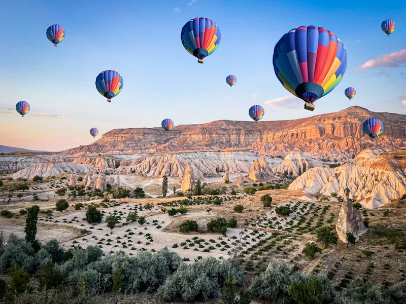
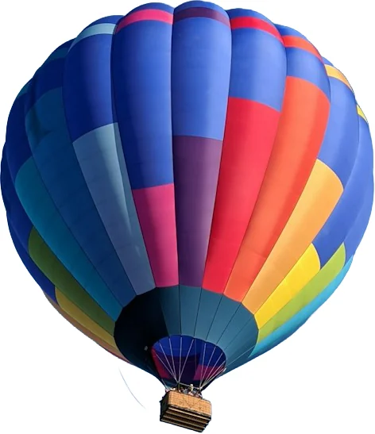
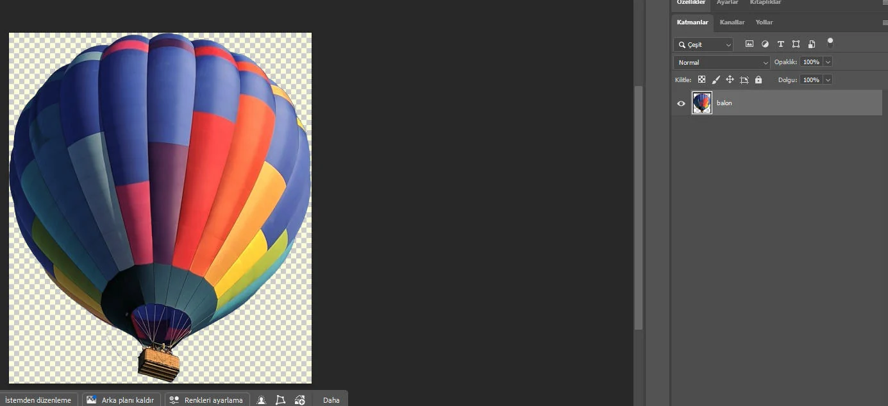

Photo compositing
Smart Object — Cappadocia Balloons
A Cappadocia composition using 12 linked Smart Object instances of one balloon to create depth.
Adobe Photoshop · Onur Can Orhan · November 2026

Smart Object
Cappadocia: 12 balloons from one source
I placed 12 instances of the same Smart Object over a Cappadocia landscape, varying their scale and opacity to create depth between nearby and distant balloons.
How I made it
I isolated one balloon, converted it to a Smart Object and grouped its instances. Editing the source with Edit Contents and Hue/Saturation updated all 12 instances together. The original balloon layer remains preserved and hidden.
Smart Object instances · Edit Contents · Hue/Saturation · Depth





The result
I made nearby balloons larger and distant ones smaller and less opaque. Changing colour in the shared source updates all balloons together.